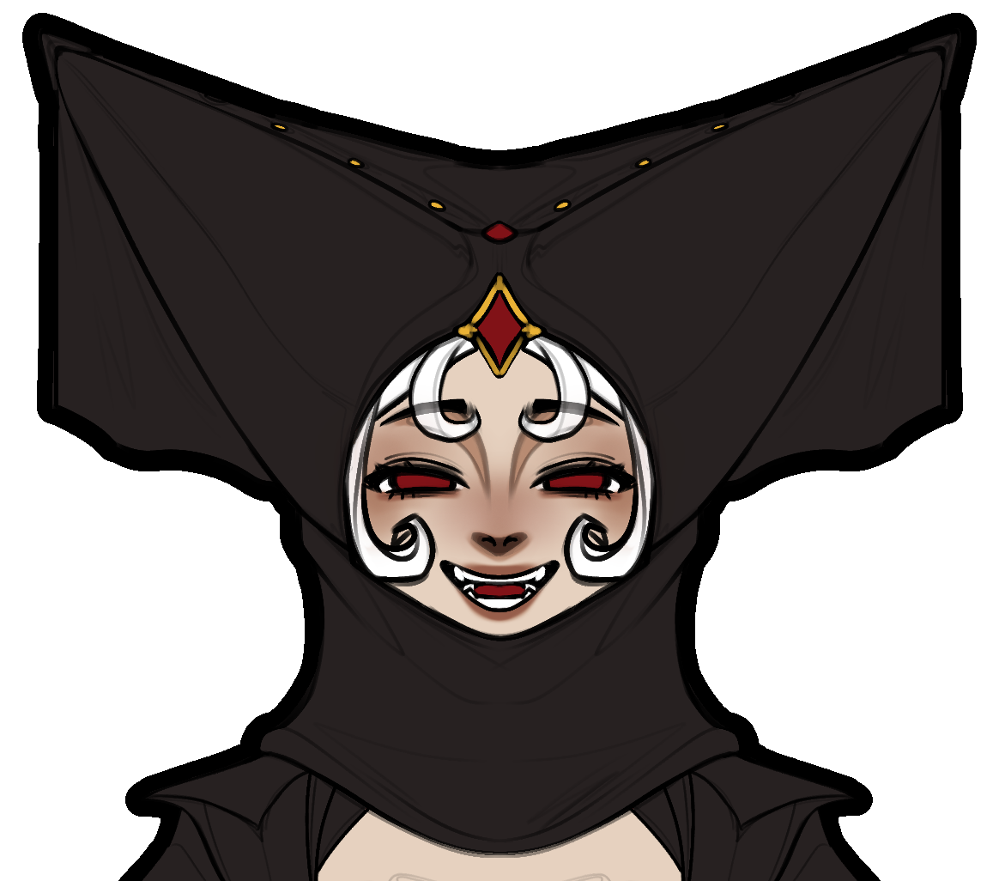

Sybil Amanti de Fati is a narrative driven isometric action roguelite set in a sprawling dark fantasy metropolis. Play as Sybil, the chosen servant of a forgotten god of fate, and carry out bloody bounties to restore his power.rld where fate is carved in blood, Sybil, a fierce and enigmatic protagonist, embarks on a perilous journey to confront her destiny. As she delves into the depths of her past and uncovers the secrets of her lineage, Sybil must navigate a treacherous landscape filled with dark magic, ancient prophecies, and formidable adversaries. With each step, she discovers the true extent of her powers and the sacrifices she must make to alter the course of her fate. In this gripping tale of resilience and self-discovery, Sybil's quest for redemption becomes a battle against the very forces that seek to control her destiny.
Location
Sybil's Mansion
Black Market
Enemy Church
Ominous Final Location
Meet Our Characters

Sybil
The protagonist, a fierce servant of fate carrying out bloody bounties.